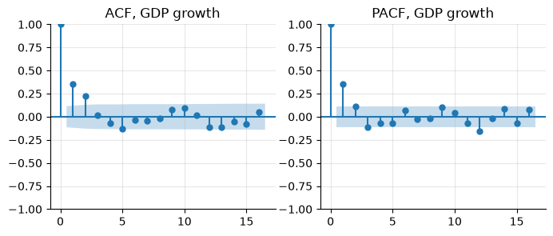

9. Diagnostics: stationarity, autocorrelation, outliers#
Quick checks before modelling: is the series stationary (or which transformation makes it so)? How persistent is it? Are there outliers that will drive the results?
import warnings
import numpy as np
import pandas as pd
import matplotlib.pyplot as plt
import statsmodels.api as sm
from statsmodels.tsa.stattools import adfuller, kpss, zivot_andrews
from statsmodels.tools.sm_exceptions import InterpolationWarning
from econts import load
y = 100 * np.log(load("GDPC1")).loc[:"2019"]
dy = y.diff().dropna()
u = load("UNRATE").loc[:"2019"]
9.1. ADF and KPSS together#
def unit_root_table(series: dict[str, pd.Series]) -> pd.DataFrame:
"""ADF and KPSS p-values; `regression` is 'ct' (trend) or 'c' (constant)."""
rows = {}
for name, (s, reg) in series.items():
adf_p = adfuller(s, regression=reg, autolag="AIC", result_object=True).pvalue
with warnings.catch_warnings(): # KPSS p-values are bounded
warnings.simplefilter("ignore", InterpolationWarning)
kpss_p = kpss(s, regression=reg, nlags="auto", result_object=True).pvalue
verdict = (
"stationary"
if adf_p < 0.05 and kpss_p > 0.05
else "unit root"
if adf_p > 0.05 and kpss_p < 0.05
else "unclear"
)
rows[name] = {
"ADF p (H0: unit root)": adf_p,
"KPSS p (H0: stationary)": kpss_p,
"verdict": verdict,
}
return pd.DataFrame(rows).T.infer_objects()
print(
unit_root_table(
{
"log GDP (trend)": (y, "ct"),
"GDP growth": (dy, "c"),
"unemployment rate": (u, "c"),
}
).round(3)
)
ADF p (H0: unit root) KPSS p (H0: stationary) verdict
log GDP (trend) 0.627 0.010 unit root
GDP growth 0.000 0.071 stationary
unemployment rate 0.037 0.033 unclear
In your projects
The same recipe is in the econts toolkit:
from econts.diagnostics import unit_root_table
Log GDP has a unit root, its growth rate is stationary. The unemployment rate is the typical “unclear” case: both tests reject. It is very persistent but bounded, a near-unit-root process; treat it as stationary in levels for most macro work, and check that results survive using its first difference.
KPSS p-values are tabulated only between 0.01 and 0.10; values at those bounds mean “at most 0.01” or “at least 0.10”.
9.2. Structural breaks#
A break in the trend makes a stationary series look like a unit root. Zivot–Andrews tests the unit root against a trend-stationary alternative with one endogenous break, and estimates the break date.
stat, pval, crit, lags, bp = zivot_andrews(y.to_numpy(), regression="ct", autolag="AIC")
print(f"ZA stat {stat:.2f}, p = {pval:.2f}, break at {y.index[bp]:%Y-%m}")
ZA stat -3.83, p = 0.62, break at 1997-01
Here the test does not reject: one trend break is not enough to make US log GDP trend-stationary.
9.3. Autocorrelation#
The ACF shows persistence; the PACF suggests the AR order.
fig, axes = plt.subplots(1, 2, figsize=(8, 3))
sm.graphics.tsa.plot_acf(dy, lags=16, ax=axes[0], title="ACF, GDP growth")
sm.graphics.tsa.plot_pacf(
dy, lags=16, ax=axes[1], title="PACF, GDP growth", method="ywm"
)

The Ljung–Box test checks whether residuals (or a series) are white noise:
print(sm.stats.acorr_ljungbox(dy, lags=[4, 8], return_df=True).round(4))
lb_stat lb_pvalue
4 53.8564 0.0
8 59.7674 0.0
9.4. Outliers#
A robust z-score uses the rolling median and the median absolute deviation (MAD), which outliers do not drag along.
def robust_outliers(s: pd.Series, window: int = 21, threshold: float = 4.0):
"""Flag points more than `threshold` robust SDs from the rolling median."""
med = s.rolling(window, center=True, min_periods=window // 2).median()
mad = (s - med).abs().rolling(window, center=True, min_periods=window // 2).median()
z = (s - med) / (1.4826 * mad) # 1.4826 * MAD = SD under normality
return z.abs() > threshold
claims = load("ICSA")
flags = robust_outliers(np.log(claims))
print(claims[flags].loc["2020"].head()) # the March-April 2020 surge
date
2020-03-28 5946000.0
2020-04-04 6137000.0
2020-04-11 4869000.0
2020-04-18 4201000.0
2020-04-25 3446000.0
Name: ICSA, dtype: float64
In your projects
The same recipe is in the econts toolkit:
from econts.diagnostics import robust_outliers, winsorize
Then decide: correct a data error, dummy a genuine one-off (strike, hurricane, lockdown), or winsorize when the outliers are noise:
dy_full = 100 * np.log(load("GDPC1")).diff().dropna()
lo, hi = dy_full.quantile([0.01, 0.99])
dy_wins = dy_full.clip(lo, hi)
print(
dy_full.loc["2020"].round(2).tolist(), "->", dy_wins.loc["2020"].round(2).tolist()
)
# one pulse per quarter: the crash and the rebound have opposite signs,
# so a single 2020Q2-Q3 dummy would absorb neither (chapter 10)
covid = pd.DataFrame(0.0, index=dy_full.index, columns=["2020Q2", "2020Q3"])
covid.loc["2020-04-01", "2020Q2"] = 1.0
covid.loc["2020-07-01", "2020Q3"] = 1.0
[-1.33, -8.2, 7.48, 1.13] -> [-1.33, -1.99, 3.7, 1.13]
9.5. Pitfalls#
Seasonal adjustment filters bias ADF tests toward not rejecting a unit root (Ghysels and Perron, 1993). With unadjusted data, add seasonal dummies to the test regression instead.
Running the test on the full sample including 2020 makes many series look stationary (a huge mean-reverting spike) or not (a level shift).
“Fail to reject” is not “accept”: ADF cannot tell a unit root from a root of 0.95 in 60 years of quarterly data.
9.6. Summary#
Run ADF (null: unit root) and KPSS (null: stationary) together. Conclusions are strongest when they agree.
Include a trend in the test when the series trends (log GDP); omit it for growth rates and rates (unemployment).
Unit-root tests have low power in short samples and are fooled by structural breaks. Use economics as well as p-values.
9.7. Exercises#
Run ADF and KPSS on log CPI (
CPIAUCSL, with trend), on monthly CPI inflation (constant) and on the Portuguese 10-year yield (IRLTLT01PTM156N, constant), all ending in 2019. Which verdicts are clear and which are “unclear”?Run Zivot–Andrews on log Portuguese real GDP (
CLVMNACSCAB1GQPT, 1995–2019). Where does it place the break, does it reject the unit root, and does the date make economic sense?Fit an AR(1) to quarterly US GDP growth (1947–2019) and apply the Ljung–Box test to its residuals at lags 4 and 8. Is one lag enough? Compare with what the PACF of GDP growth suggests.
Repeat the ADF and KPSS tests on the US unemployment rate over 1948 to the end of the sample instead of 1948–2019. Does including 2020 change the verdict, and in which direction would you expect a large, quickly reversed spike to push each test?